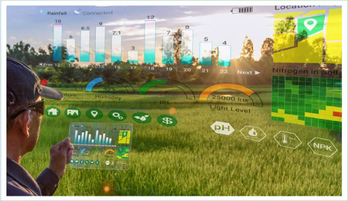
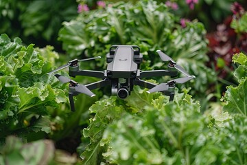
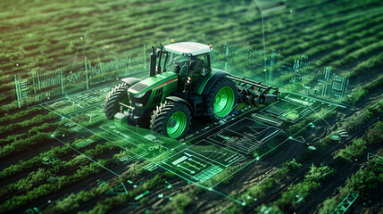

Unit III - Agricultural Systems Management
Agricultural Systems - Managerial Overview
Agricultural systems management provides a comprehensive framework for optimizing farming operations. It focuses on integrating technology, resources, and strategies to maximize productivity and sustainability.
Reliability of Agricultural Systems
Reliability in agricultural systems ensures consistent performance and productivity. It involves risk assessment, preventive measures, and the implementation of robust management techniques to handle uncertainties.

Simulation of Crop Growth and Field Operations
Simulations allow farmers to model crop growth and field operations under different conditions. These models help in predicting outcomes, optimizing practices, and reducing resource wastage.
Optimizing the Use of Resources
Resource optimization involves using tools like precision agriculture, GIS, and sensor technology to ensure efficient utilization of water, fertilizers, and labor while minimizing environmental impact.
Linear Programming and Project Scheduling
Linear programming is a mathematical method used to allocate limited resources effectively. Project scheduling techniques like Gantt charts and Critical Path Method (CPM) help in planning and managing agricultural projects efficiently.

Artificial Intelligence and Decision Support Systems
AI and decision support systems (DSS) play a crucial role in modern agriculture. They analyze vast amounts of data to provide insights and recommendations for decision-making, improving efficiency and reducing risks.
